Table of Contents
- User's Guide
- Blocks
- Conditions
- Assemblies
- Regions
- Subregions
- Connectors
- Characteristics
- Units
- Quantities
- BaseClasses
Download
- Latest: FCSys-2.0.zip (**Please check back soon or contact kdavies4 at gmail.com.)

Three types of physical connectors are used in FCSys. The chemical connectors (ChemicalInput, ChemicalOutput, ChemicalBus, and ChemicalBusInternal) represent advective exchange among species that react chemically within a subregion. The inert connectors (Inert, InertAmagat, InertDalton, and InertInternal) describe diffusive (non-chemical) exchange among species within a subregion. The face connectors (Face, FaceBus, and FaceBusInternal) describe advective and diffusive transport between instances of a single species in neighboring regions or subregions.
The effort-flow pairs of the connectors are listed in Table 1. The dimensions of the efforts and flows are noted in terms of mass (M), amount or particle number (N), length (L), and time (T). The pairs are used to describe the transfer of material, linear momentum, and energy associated with material, mechanical, and thermal interactions. Both advection (e.g., dynamic force and thermal convection) and diffusion (e.g., friction and thermal conduction) are resolved (see the Species model).
The effort-flow product of the mechanical or transverse pair is the rate of energy associated with the interaction. However, the other pairs are different. The effort of the material pair is electrochemical potential divided by temperature because it is used in the chemical equilibrium (see the Reaction model). The fluid pair's effort is massic enthalpy (enthalpy divided by mass) since it is used for advection only. The normal pair has areic current as the effort rather than current as the flow because it is more straightforward for the Species model. The corresponding flow is force rather than electrochemical potential (as the effort) so that the other thermodynamic properties can be calculated without nonlinear systems of equations (see the Species model). The flow variable of the thermal pair is heat flow rate instead of entropy flow rate so that the transport equations are linear and follow the traditional form (e.g., Fourier's law; see [Hogan2006], [Cellier1991], and Modelica.Thermal.HeatTransfer). The additivity of volume and pressure pairs describe static balances; therefore, their flows are the quantities rather than the rates of the quantities.
| Within icon(s) | Name or quantity | Effort | Flow |
|---|---|---|---|
| Material | Potential divided by temperature μ/T [1] |
Current Ṅ [N T-1] |
|

|
Normal | Areic current J [N L-2 T-1] |
Force mΦdot [L M T-2] |
|
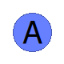 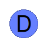 |
Mechanical and Transverse | Velocity φ [L T-1] |
Force mΦdot [L M T-2] |
| Fluid | Massic enthalpy h̄ [L2 M N-1 T-2] |
Enthalpy flow rate Ḣ [L2 M T-3] |
|
|
|
Thermal | Temperature T [L2 M N-1 T-2] |
Heat flow rate Q̇ [L2 M T-3] |
| Amagat (additive volume) |
Pressure p [M L-1 T-2] |
Volume V [L3] |
|
| Dalton (additive pressure) |
Volume V [L3] |
Pressure p [M L-1 T-2] |
Figure 1 depicts the hierarchy of the connectors.
The bottom row contains icons that represent the effort-flow pairs in
Table 1. Most of the connectors on the middle row are
flat; they build on the row below by extension.
The exceptions, which use instantiation, are the
Inert and
InertInternal connectors.
The top row contains expandable connectors
(FaceBus and
ChemicalBus) which group
the Face and chemical (ChemicalInput or
ChemicalOutput) connectors of multiple species.
The
FaceBusInternal and
ChemicalBusInternal
connectors (not shown) are versions of
ChemicalBus and
FaceBus
that merely have a default protected prefix and smaller icons to
indicate that they are internal to a model.
Although the physical variables are acausal, the ChemicalInput and ChemicalOutput connectors have inputs and outputs to pass characteristic data of the species—the chemical formula and the specific mass. That information is used to determine the appropriate stoichiometric and advective equations in the Reaction model.
There are two specialized types of inert connectors. The InertAmagat connector (with an "A" in the icon) imposes Amagat's law or additivity of volume and is used to combine material phases within a subregion. The InertDalton connector (with a "D" in the icon) applies Dalton's law or additivity of pressure to mix species within a material phase (e.g., N2 and O2 within a gas). The two cannot be directly connected because the effort-flow designations are opposite. An adapter must be used (e.g., PhaseBoundary).
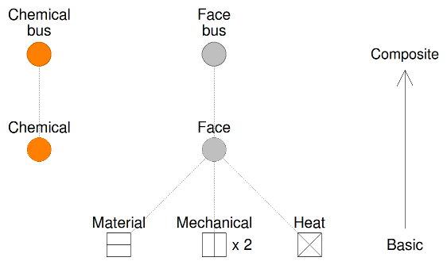
Figure 1: Hierarchy of the connectors.
Relation to thermodynamics and justification of the Amagat and Dalton connectors:
In order to describe the dynamic behavior of a physical system, a model must include conservation laws or rate balances. These equations involve the storage and flow of extensive quantities within (among species) and into the system. In chemical/thermal systems, the extensive quantities of interest are particle number (or mass) and entropy or energy. For the sake of simplicity, momentum will be excluded from the present discussion; assume that the fluid is macroscopically stagnant. Also assume that there is only one inlet or outlet to the system. In terms of mathematics, we have introduced four variables (2 flows and 2 quantities) but only two equations (material and energy conservation).
Two additional equations involve flow rates; these are transport equations with spatial nature—separate from the temporal conservation equations. An extensive body of empirical evidence indicates that the the flows are related to differences in efforts or generalized "driving forces." The most appropriate efforts are conjugate to the quantities with respect to energy or entropy. For the chemical/thermal system, the efforts are then electrochemical potential and temperature. Yet these are intensive properties—distinct from the quantities, which are extensive. So far, there are two rate balances to relate extensive quantities to flows and two transport equations (4 equations in all) and six variables (2 quantities, 2 flows, and 2 efforts or intensive properties).
One extensive quantity can be divided by the other to yield an intensive property. For example, internal energy can be divided by particle number to give internal potential (the relationship is not as direct for electrochemical potential, but the concept still holds). The other equation involves the spatial extent of the system, for example, the extensive volume of the system divided by particle number to give specific volume. This introduces another variable (extensive volume); now there are six equations and seven variables.
Fortunately, we may assume that the extensive volume of the system is fixed (i.e., that the system is a "control volume"). If there is only one species in the system, we assume that it fills the entire volume (e.g., no macroscopically observable regions of vacuum). If another species is included in the system, the number of variables is doubled. All of the equations may be repeated except that the specific volume of each species is its own extensive volume or "partial volume" divided by its particle number to give "partial specific volume." It is reasonable to assume that the sum of the partial volumes is equal to the total volume of the system (again, no voids). This is a generalization of the previous equation that set the volume of the single species equal to the volume of the system or control volume. However, now there are three volumes (of each species and of the system) instead of two (of the one species and of the system) but no additional equations.
In general, an additional equation may be added to exchange volume between the two species such that they reach equilibrium. This could be modeled by another transport-like equation, with a slight modification. However, in the FCSys package, it is assumed that this equilibrium already/always exists. Since we wish to impose that the sum of the two partial volumes is equal to the total volume, it is appropriate to set the flow variable to be the quantity itself (volume) rather than the rate of the quantity. Then, there is no need for another rate balance to relate the quantity to the flow; the quantity is the flow. In this case, the most appropriate effort variable is pressure (or ideal density). The relationship among pressure, specific volume, and temperature is given by an equation of state. This "additivity of volume" interaction occurs through the InertAmagat connector.
If the species are mixed, it may be more appropriate to assume that the pressures of the components of a mixture sum to the total pressure of the mixture. This "additivity of pressure" is described by connections of the InertDalton connector (instead of instead of InertAmagat).
Licensed by the Georgia Tech Research Corporation under the Modelica License 2
Copyright 2007–2013, Georgia Tech Research Corporation.
This Modelica package is free software and the use is completely at your own risk; it can be redistributed and/or modified under the terms of the Modelica License 2. For license conditions (including the disclaimer of warranty) see FCSys.UsersGuide.ModelicaLicense2 or visit http://www.modelica.org/licenses/ModelicaLicense2.
Extends from Modelica.Icons.InterfacesPackage (Icon for packages containing interfaces).
| Name | Description |
|---|---|
| ChemicalBus | Bus of ChemicalInput and ChemicalOutput connectors (for multiple species) |
| ChemicalBusInternal | Internal bus of ChemicalInput and ChemicalOutput connectors (for multiple species) |
| ChemicalInput | Connector to exchange material while advecting linear momentum and enthalpy, with characteristic data as input |
| ChemicalOutput | Connector to exchange material while advecting linear momentum and enthalpy, with characteristic data as output |
| FaceBus | Bus of Face connectors (for multiple species) |
| FaceBusInternal | Internal bus of Face connectors (for multiple species) |
| Face | Connector to transport linear momentum and heat of a single species |
| Inert | Connector to exchange linear momentum and heat by diffusion |
| InertAmagat | Inert connector with additivity of volume |
| InertDalton | Inert connector with additivity of pressure |
| InertInternal | Internal Inert connector |
"input Real" as a connector | |
Internal "input Real" as a connector | |
| RealInputBus | Bus of RealInput connectors |
| RealInputBusInternal | Internal bus of RealInput connectors |
"output Real" as a connector | |
Internal "output Real" as a connector | |
| RealOutputBus | Bus of RealOutput connectors |
| RealOutputBusInternal | Internal bus of RealOutput connectors |
| Base classes (not generally for direct use) |
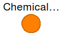
There is no minimal set of variables. Species are included by connecting instances of a Chemical connector (ChemicalInput or ChemicalOutput).
expandable connector ChemicalBus "Bus of ChemicalInput and ChemicalOutput connectors (for multiple species)"end ChemicalBus;
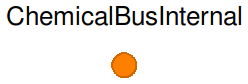
This is copy of the ChemicalBus connector, except that it
has a smaller icon and a default protected prefix. For more information, see that connector.
expandable connector ChemicalBusInternal "Internal bus of ChemicalInput and ChemicalOutput connectors (for multiple species)"end ChemicalBusInternal;
See the PartialChemical connector and the documentation in the Connectors package.
Extends from BaseClasses.PartialChemical (Partial connector to exchange material while advecting linear momentum and enthalpy).
| Type | Name | Default | Description |
|---|---|---|---|
| Integer | n_lin | 1 | Number of components of linear momentum (nlin) |
| Type | Name | Description |
|---|---|---|
| Number | muPerT | Quotient of electrochemical potential and temperature [1] |
| flow Current | Ndot | Current [N/T] |
| Integer | n_lin | Number of components of linear momentum (nlin) |
| Velocity | phi[n_lin] | Velocity [l/T] |
| flow Force | mPhidot[n_lin] | Force [l.m/T2] |
| Velocity2 | hbar | Massic enthalpy [l2/T2] |
| flow Power | Hdot | Enthalpy flow rate [l2.m/T3] |
| input MassSpecific | m | Specific mass [m/N] |
| input String | formula | Chemical formula |
connector ChemicalInput "Connector to exchange material while advecting linear momentum and enthalpy, with characteristic data as input" extends BaseClasses.PartialChemical; input Q.MassSpecific m "Specific mass"; input String formula(start="") "Chemical formula"; // Note: The start value prevents a warning when checked in Dymola 7.4.end ChemicalInput;
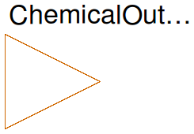
See the PartialChemical connector and the documentation in the Connectors package.
Extends from BaseClasses.PartialChemical (Partial connector to exchange material while advecting linear momentum and enthalpy).
| Type | Name | Default | Description |
|---|---|---|---|
| Integer | n_lin | 1 | Number of components of linear momentum (nlin) |
| Type | Name | Description |
|---|---|---|
| Number | muPerT | Quotient of electrochemical potential and temperature [1] |
| flow Current | Ndot | Current [N/T] |
| Integer | n_lin | Number of components of linear momentum (nlin) |
| Velocity | phi[n_lin] | Velocity [l/T] |
| flow Force | mPhidot[n_lin] | Force [l.m/T2] |
| Velocity2 | hbar | Massic enthalpy [l2/T2] |
| flow Power | Hdot | Enthalpy flow rate [l2.m/T3] |
| output MassSpecific | m | Specific mass [m/N] |
| output String | formula | Chemical formula |
connector ChemicalOutput "Connector to exchange material while advecting linear momentum and enthalpy, with characteristic data as output" extends BaseClasses.PartialChemical; output Q.MassSpecific m "Specific mass"; output String formula "Chemical formula";end ChemicalOutput;
There is no minimal set of variables. Species are included by connecting instances of Face connectors.
expandable connector FaceBus "Bus of Face connectors (for multiple species)"end FaceBus;
This is copy of the FaceBus connector, except that it
has a smaller icon and a default protected prefix. For more information, see that connector.
expandable connector FaceBusInternal "Internal bus of Face connectors (for multiple species)"end FaceBusInternal;
FCSys.Connectors.Face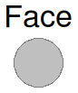
Note that the geometric orientation is global. Force is the rate of globally-referenced linear momentum into the component. Areic current is positive in the globally positive direction (not inward). This is different than the ChemicalInput and ChemicalOutput connectors, where current is positive into the component.
For more information, see the documentation in the Mechanical base class and the Connectors package.
Extends from BaseClasses.Mechanical (Connector to exchange or transport linear momentum), BaseClasses.Thermal (Connector to exchange or transport heat).
| Type | Name | Default | Description |
|---|---|---|---|
| Integer | n_lin | 2 | Number of components of linear momentum (nlin) |
| Type | Name | Description |
|---|---|---|
| CurrentAreic | J | Areic current [N/(l2.T)] |
| flow Force | mPhidot_0 | Normal force [l.m/T2] |
| Integer | n_lin | Number of components of linear momentum (nlin) |
| Velocity | phi[n_lin] | Velocity [l/T] |
| flow Force | mPhidot[n_lin] | Force [l.m/T2] |
| TemperatureAbsolute | T | Temperature |
| flow Power | Qdot | Heat flow rate [l2.m/T3] |
connector Face "Connector to transport linear momentum and heat of a single species" // Normal Q.CurrentAreic J(nominal=U.A/U.cm^2) "Areic current"; flow Q.Force mPhidot_0(nominal=U.atm*U.cm^2) "Normal force"; // Transverse extends BaseClasses.Mechanical(final n_lin=2); // Thermal extends BaseClasses.Thermal;end Face;
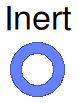
For more information, see the documentation in the Connectors package.
| Type | Name | Default | Description |
|---|---|---|---|
| Integer | n_lin | 0 | Number of components of linear momentum (nlin) |
| Type | Name | Description |
|---|---|---|
| Integer | n_lin | Number of components of linear momentum (nlin) |
| Mechanical | mechanical | Subconnector for linear momentum |
| Thermal | thermal | Subconnector for heat |
connector Inert
"Connector to exchange linear momentum and heat by diffusion"
parameter Integer n_lin(
final min=0,
final max=3) = 0
"Number of components of linear momentum (nlin)";
BaseClasses.Mechanical mechanical(final n_lin=n_lin)
"Subconnector for linear momentum";
BaseClasses.Thermal thermal "Subconnector for heat";
end Inert;
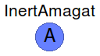
The concept of "additivity of volume" is defined by Amagat's law or the Law of Partial Volumes, which states that the partial extensive volumes of the components of a mixture sum to the total extensive volume of the mixture [Bejan2006, p. 194]. The specific or molar volumes of the species are each evaluated at the temperature and the total pressure of the mixture.
This concept loses its physical meaning once the species are mixed [Woo1995]. If the species are truly mixed, then it is impossible to distinguish their particles and thus determine their partial volumes. Therefore, the concept is only used for distinct phases within the same subregion—not for species within a phase. If a system contains only a solid phase and a gas phase, it is assumed that the partial volumes of the mixtures are additive and the mixtures exist at the same pressure. Within a phase, the species are mixed according to Dalton's law (see the InertDalton connector).
In order to implement Amagat's law, this connector includes volume (not rate of volume) as a flow variable. The effort variable is pressure such that the effort and flow variables are conjugates of energy (not power).
Note that this connector extends from the Mechanical and Thermal connectors, whereas the Inert and InertInternal connectors includes them as subconnectors.
See also the Inert and InertDalton connectors and the documentation in the Connectors package.
Extends from BaseClasses.Mechanical (Connector to exchange or transport linear momentum), BaseClasses.Thermal (Connector to exchange or transport heat).
| Type | Name | Default | Description |
|---|---|---|---|
| Integer | n_lin | 1 | Number of components of linear momentum (nlin) |
| Type | Name | Description |
|---|---|---|
| Integer | n_lin | Number of components of linear momentum (nlin) |
| Velocity | phi[n_lin] | Velocity [l/T] |
| flow Force | mPhidot[n_lin] | Force [l.m/T2] |
| TemperatureAbsolute | T | Temperature |
| flow Power | Qdot | Heat flow rate [l2.m/T3] |
| PressureAbsolute | p | Pressure [m/(l.T2)] |
| flow Volume | V | Volume [l3] |
connector InertAmagat "Inert connector with additivity of volume" extends BaseClasses.Mechanical; extends BaseClasses.Thermal; // Additivity of volume Q.PressureAbsolute p(nominal=U.atm) "Pressure"; flow Q.Volume V(min=-Modelica.Constants.inf, nominal=U.cc) "Volume";end InertAmagat;
The concept of "additivity of pressure" is defined by Dalton's law or the Law of Partial Pressures, which states that the partial pressures of the components of a mixture sum to the total pressure of the mixture [Bejan2006, p. 192]. The partial pressures of the species are evaluated at the temperature and the total volume of the mixture.
In order to implement Dalton's law, this connector includes pressure as a flow variable. The effort variable is volume such that the effort and flow variables are conjugates of energy (not power).
Note that this connector extends from the Mechanical and Thermal connectors, whereas the Inert and InertInternal connectors includes them as subconnectors.
See also the InertAmagat and Inert connectors and the documentation in the Connectors package.
Extends from BaseClasses.Mechanical (Connector to exchange or transport linear momentum), BaseClasses.Thermal (Connector to exchange or transport heat).
| Type | Name | Default | Description |
|---|---|---|---|
| Integer | n_lin | 1 | Number of components of linear momentum (nlin) |
| Type | Name | Description |
|---|---|---|
| Integer | n_lin | Number of components of linear momentum (nlin) |
| Velocity | phi[n_lin] | Velocity [l/T] |
| flow Force | mPhidot[n_lin] | Force [l.m/T2] |
| TemperatureAbsolute | T | Temperature |
| flow Power | Qdot | Heat flow rate [l2.m/T3] |
| Volume | V | Volume [l3] |
| flow Pressure | p | Pressure [m/(l.T2)] |
connector InertDalton "Inert connector with additivity of pressure" extends BaseClasses.Mechanical; extends BaseClasses.Thermal; // Additivity of pressure Q.Volume V(nominal=U.cc) "Volume"; flow Q.Pressure p(nominal=U.atm) "Pressure";end InertDalton;
This is copy of the Inert connector, except that it
has a smaller icon, a default protected prefix, and the subconnectors are conditional.
For more information, see that connector.
| Type | Name | Default | Description |
|---|---|---|---|
| Integer | n_lin | 0 | Number of components of linear momentum (nlin) |
| Boolean | inclMechanical | true | Include the mechanical subconnector |
| Boolean | inclThermal | true | Include the thermal subconnector |
| Type | Name | Description |
|---|---|---|
| Integer | n_lin | Number of components of linear momentum (nlin) |
| Boolean | inclMechanical | Include the mechanical subconnector |
| Boolean | inclThermal | Include the thermal subconnector |
| Mechanical | mechanical | Subconnector for linear momentum |
| Thermal | thermal | Subconnector for heat |
connector InertInternal "Internal Inert connector" parameter Integer n_lin( final min=0, final max=3) = 0 "Number of components of linear momentum (nlin)"; parameter Boolean inclMechanical=true "Include the mechanical subconnector"; parameter Boolean inclThermal=true "Include the thermal subconnector"; BaseClasses.Mechanical mechanical(final n_lin=n_lin) if inclMechanical "Subconnector for linear momentum"; BaseClasses.Thermal thermal if inclThermal "Subconnector for heat";end InertInternal;
 FCSys.Connectors.RealInput
FCSys.Connectors.RealInputinput Real" as a connector

Connector with one input signal of type Real.
Extends from Real.
connector RealInput = input Real
""input Real" as a connector";
FCSys.Connectors.RealInputInternalinput Real" as a connector
Protected connector with one input signal of type Real.
Extends from Real.
connector RealInputInternal = input Real
"Internal "input Real" as a connector";
 FCSys.Connectors.RealInputBus
FCSys.Connectors.RealInputBus
There is no minimal set of variables. Signals are included by connecting instances of the RealInput connector.
expandable connector RealInputBus "Bus of RealInput connectors"end RealInputBus;
FCSys.Connectors.RealInputBusInternal
There is no minimal set of variables. Signals are included by connecting instances of the RealInput connector.
expandable connector RealInputBusInternal "Internal bus of RealInput connectors"end RealInputBusInternal;
 FCSys.Connectors.RealOutput
FCSys.Connectors.RealOutputoutput Real" as a connector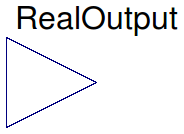
Connector with one output signal of type Real.
Extends from Real.
connector RealOutput = output Real
""output Real" as a connector";
FCSys.Connectors.RealOutputInternaloutput Real" as a connector
Protected connector with one output signal of type Real.
Extends from Real.
connector RealOutputInternal = output Real
"Internal "output Real" as a connector";
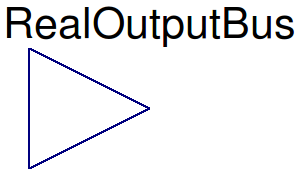
There is no minimal set of variables. Signals are included by connecting instances of the RealOutput connector.
expandable connector RealOutputBus "Bus of RealOutput connectors"end RealOutputBus;
There is no minimal set of variables. Signals are included by connecting instances of the RealOutput connector.
expandable connector RealOutputBusInternal "Internal bus of RealOutput connectors"end RealOutputBusInternal;